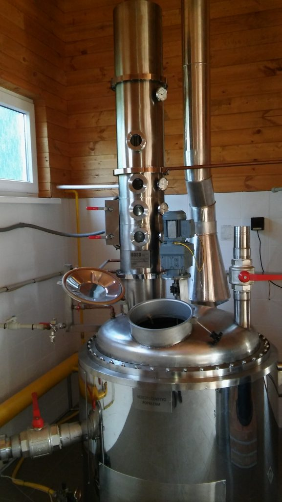

Čo ponúkame
Služby

Príprava kvasu
- Obsluha a poradenstvo
- Odkôstkovanie sliviek a marhúľ, príprava jabĺk a hrušiek
- Kvas je obsluhovaný profi čerpadlom
- Destilácia na najmodernejšom zariadení s deflegmátorom — vysoká kvalita destilátu aj z menej kvalitného kvasu
- Chuť a vôňu destilátu zvyšuje aromátor
- Pri väčšom množstve kvasu — zľavy
Minimálne množstvo pre jedno pálenie je 150 litrov. Pri menšom množstve je možné ho zmiešať s kvasom iného pestovateľa, pri zachovaní rovnakého pomeru ovocia.
Kvas
Príprava a odovzdanie kvasu, minimálne 150 l na jedno pálenie.
Destilácia
Pálenie na zariadení s deflegmátorom a aromátorom pre vyššiu kvalitu.
Ochutnávka
Hotový destilát si môžete overiť na pravidelnej ochutnávke v Humennom.

Zásobovanie
Zabezpečenie ovocia
Pre našich zákazníkov ponúkame možnosť zakúpenia ovocia od pestovateľov zo Slovenska, Česka, Maďarska a Poľska za bezkonkurenčné ceny. Momentálne sú k dispozícii:
- slivky, rôzne odrody
- hrušky
- jablká